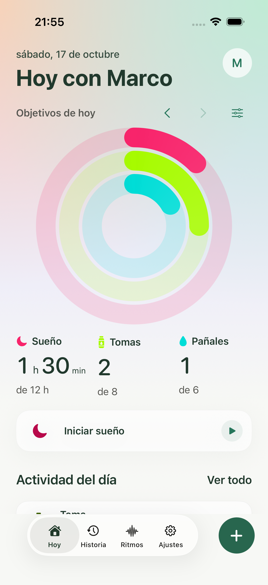
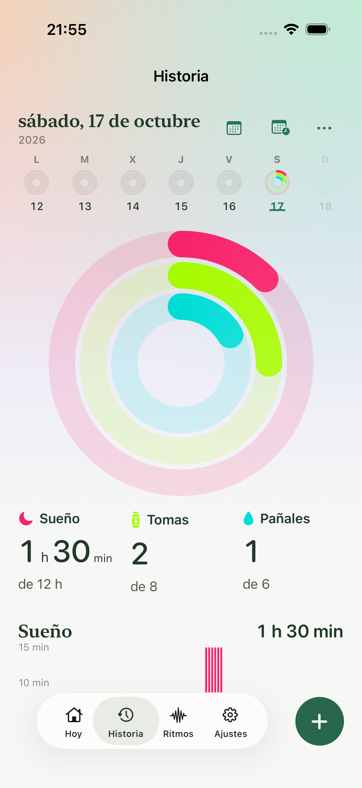
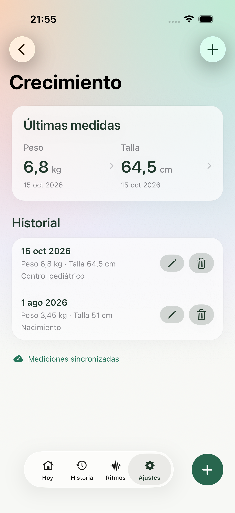
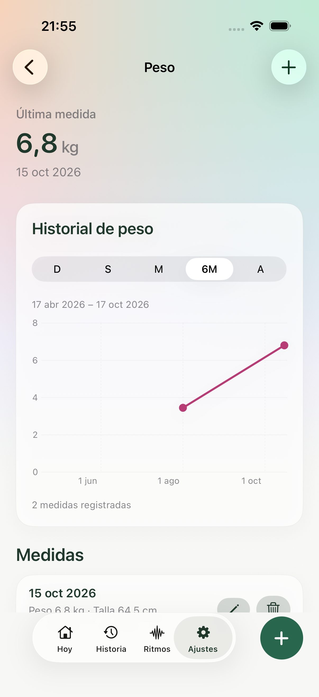
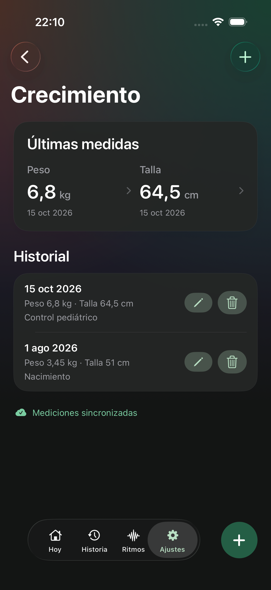
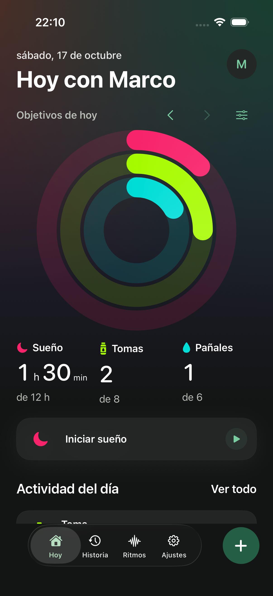
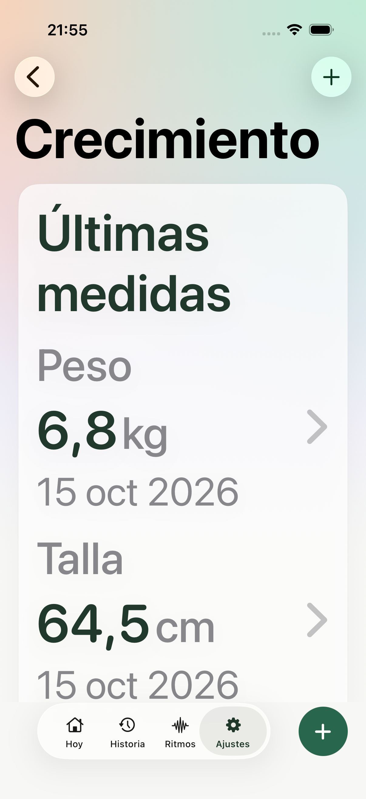
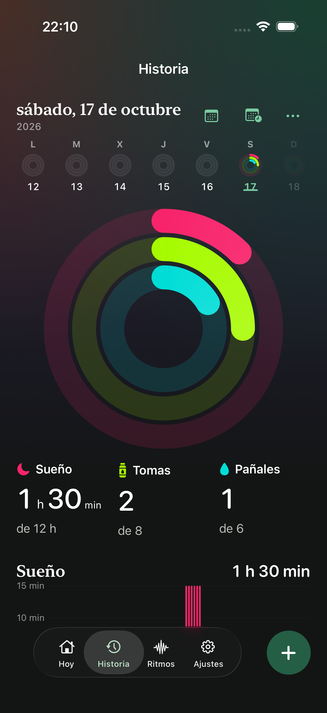
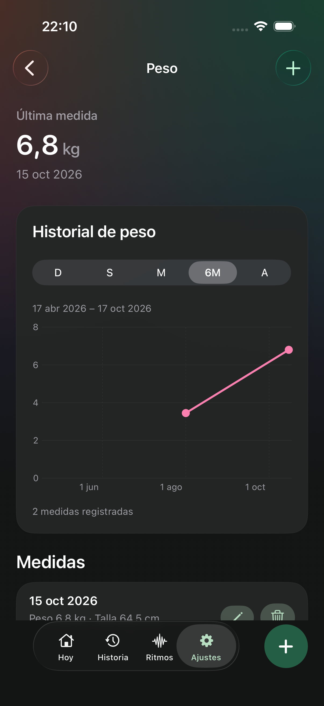

Hoy · Rosa para sueño, lima para tomas y turquesa para pañales. El progreso continúa al superar el objetivo.

Historia · La misma lectura del día, con sus propios objetivos y navegación por fechas.

Crecimiento · Peso y talla conservan su fecha y su historial independiente.
Cada medida, en su contexto.

Peso · Periodos, mediciones fechadas y evolución a partir de registros reales.

Oscuro · La jerarquía y las cantidades mantienen su protagonismo.

Hoy en oscuro · La misma identidad de Nido y los mismos colores de actividad.
Texto grande y más capturas

Texto grande · Las medidas pasan a una distribución vertical.

Historia en oscuro.

Peso en oscuro.
Los objetivos son opcionales y los configura la familia. Las cifras de estas capturas son datos de prueba. Implementación y evidencia de validación.